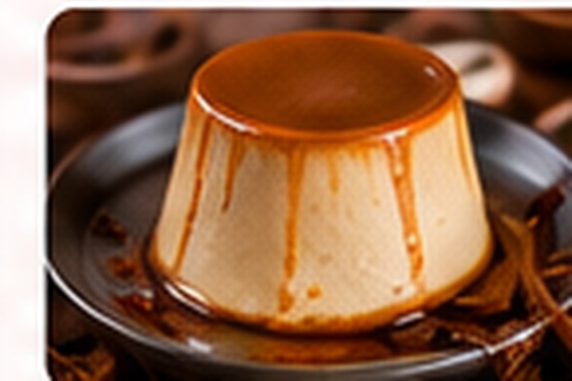
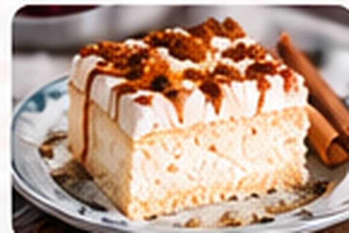
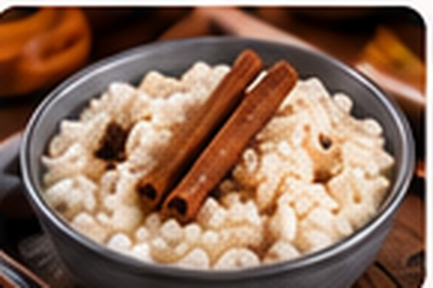
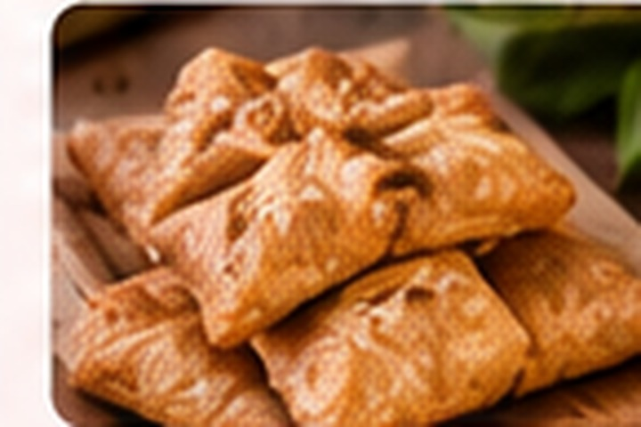
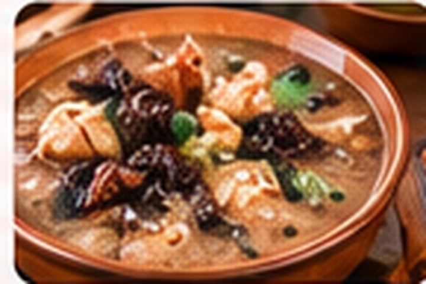
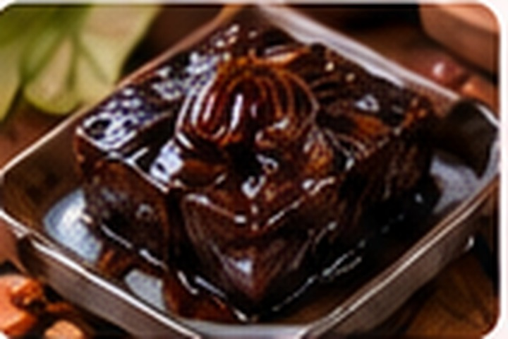
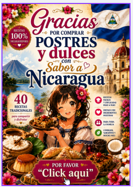

Quesillo
El postre más popular de Nicaragua.
40 recetas de postres y dulces tradicionales para disfrutar la parte más dulce de la gastronomía nicaragüense.
Un recorrido por recetas dulces, tradiciones y sabores que forman parte de nuestras celebraciones y recuerdos. Un formato digital pensado para consultar, disfrutar y compartir.

Un recorrido por recetas dulces, tradiciones y sabores que forman parte de nuestras celebraciones y recuerdos. Cada preparación conecta ingredientes, costumbres y recuerdos de nuestra tierra.
Recetas y sabores inspirados en nuestra cultura gastronómica.
Información presentada de forma práctica para consultar desde tus dispositivos.
Ideal para disfrutar en familia y conservar nuestras raíces.
Una selección dulce inspirada en las tradiciones gastronómicas de Nicaragua.

El postre más popular de Nicaragua.

Suave, cremoso e irresistible.

Tradición y sabor en cada cucharada.

Crujientes y perfectas para toda ocasión.

Un postre único de nuestra cultura.

Un sabor tradicional con raíces nicaragüenses.

Al comprar Postres y dulces con sabor a Nicaragua, también recibirás el bono promocional preparado para acompañar este recetario.
El bono mostrado corresponde al producto Postres Sabor a Nicaragua y forma parte de la oferta de compra.
🎁 Comprar y recibir mi bono — US$ 35.00Consulta tu libro desde computadora, tablet o teléfono y vuelve a tus recetas cuando quieras.
Recibe el libro digital y comienza a disfrutar nuestros sabores tradicionales.
Sí. Es un producto digital que se entrega mediante Payhip después de completar la compra.
Sí. Puedes acceder al archivo digital desde dispositivos compatibles con el formato entregado por Payhip.
Presiona cualquiera de los botones de compra y serás dirigido al checkout de Payhip, donde verás las opciones disponibles.
Sí. El encabezado y el pie de página permiten regresar a Flores Universo.
Conservemos nuestras raíces a través de los sabores que compartimos.